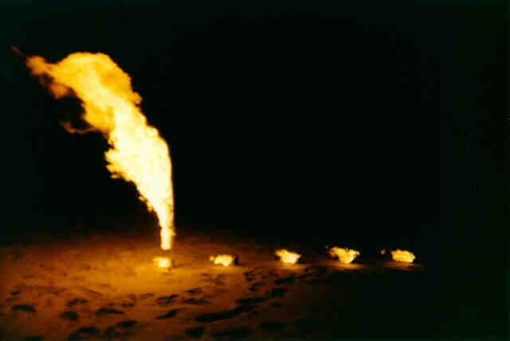

WD40
You are here: Home > Silliness > WD40A couple of years back when I was applying for a new job, some of the upstart geeks at the place managed to find my homepage, and I had already attained the mantle of "The Pyro" before I even started. The thing is, I think in the end the bosses asked which of two candidates the guys preferred, and of course they answered "The Pyro guy! Hire him!". So as I'm updating my website, I feel I should retain this page in order to help my job prospects. If you're a prospective employer, I promise not to set fire to anything whilst at work.
Anyway without further ado - an image of something going whoosh, and an explantion:
{kind=link}
Way back when I wore the badge of foolish youth (as opposed to the badge labelled "fabulously mature adult" I sport now) I quite liked things that went whoosh, bang and crump. I even manged to like these things and keep all my fingers (barring a little mid-digital hair now and then), my testicles, eyes, and indeed, my life; all despite some moments of incredible stupidity that I still boggle over. So thank you, Universe.
To explain the above image, I first have to thank my good friend Timbo for passing on the sacred knowledge of a couple of things that fall into the aforementioned "whoosh" category: namely, how to "set off" a can of WD40 (the subject of this page), and Sparkler Bombs (although it has to be said that we expanded the concept of using a piddling 50 or so sparklers to several thousand).
If you've come here from Daniel's Sparkler Bomb page I'm sure you'll know about those - if not feel free to visit it after downloading the animations below.
Anyway the point of this page is to a) provide a historical record of something silly but spectacular that we used to do, and b) replace the horrid cranky old WD40 page that dated back to my first Frontpage website. Ick.
The basic concept was this:
- Buy can(s) of WD40 (a general purpose aerosol squeak stopper and lock unsticker based largely on kerosene)
- Find deserted place (eg beach - see above, carpark rooftop - see video)
- Confirm absence of people in blue uniforms with big sticks
- Squirt some WD40 into the lid, pour it into the lip around the nozzle
- Remove said nozzle leaving valve exposed
- Light liquid
- Retreat
The burning liquid would eventually melt the valve and the can would jettison its contents skyward, igniting them on the way.
Now, if the idea of setting fire to an aerosol can sounds somewhat Darwinish to you, I agree. The gamble was, I feel, pretty sure though, given that a) the plastic valve was the weakest point in the can, and b) it never went boom, nor did I ever hear of one doing so (ok not exactly the most solid logic proof on the planet, but hey, the Universe liked me). Sometimes they wouldn't go whoosh; they'd just burn away slowly leaking for 20 minutes. But there was never an almightly kaboom. Thankfully.
Nowadays this doesn't work anyhow; they changed the valve design years ago, most likely to stop the cans going whoosh in housefires. So this page is just here as a legacy. Plus, the picture is pretty - in the big version you can see the small jet of liquid just above the flaming can. There were actually 5 cans lit that night, but it was too windy and only one went off. Incidentally, the flame in the picture is about 3 metres high. The Gold Coast's residents must love Schoolies Week.
So anyway, regarding booty - apart from clicking on the picture for a bigger version, you can click below for a nice backdrop I made once based on it, and for a couple of videos featuring a WD40 can going whoosh, as well as several sparkler bombs. I do recommend the Vivaldi one, as the quality is superior, and it has actual audio. And yes, the links below are annoying redirectors - the traffic started to mount for poor Shams who is giving me free hosting, so I thought I should burden my ISP instead. :) Enjoy!
P.S. The videos are copyright, noncommercial use is fine though. Contact me with a big cheque if you wanna air them on CNN. I have a DV version of the Vivaldi one.
P.P.S. I won't even put in a paragraph about how you shouldn't set fire to random aerosol cans. If you wanna chuck them in fires and kill yourself (and others), be my guest. Feel free to send me the snuff flick. Also, please do not bother emailing me to ask for help making bombs, or doing other stupid shit. I'm well past that now.
P.P.P.S. So, were you entertained? Should an ad appear appropriate to your needs... feel free to investigate. You might want to look around too, before you go. Click here to read about my epic trip around Australia. Click here for various other picture galleries.
If you're feeling particularly generous, you can even click on the button below to send me some dot-com riches. Go on, save yourself from a flaming fireball by giving me the money instead of buying that aerosol for the bonfire.

1129.31 KB | |
52.86 KB | |
3293.02 KB | |
13140 KB | |
12648.18 KB | |
{kind=link}